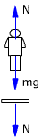

¿Qué mide un dinamómetro?
Un dinamómetro es un muelle suspendido verticalmente
que se estira al colgarle un cuerpo. Normalmente se piensa que el mue-lle
se estira porque sufre el peso del cuerpo pero no es verdad.
El peso de un cuerpo es la fuerza con que la Tierra tira de él
así que el peso actúa sobre el cuerpo y sobre nadie más
(No hará que el dinamómetro se estire)
|  |
Cuando una persona está sobre
una báscula esta ejerce sobre ella una fuerza normal N ha-cia
arriba, y a su vez la persona ejerce sobre la báscula una
fuerza igual, N, hacia abajo que es la que hace marcar a la báscula. |
| |
Cuando se cuelga Un dinamómetro
es un muelle suspendido verti-calmente al que se engancha un cuerpo.
El muelle tira del cuerpo con una fuerza F y el cuerpo tira del
muelle con la mia sma fuerza F. ¿La lectura del dinamómetro vale lo mismo que el peso del bloque? Si el bloque tiene aceleración vertical no |